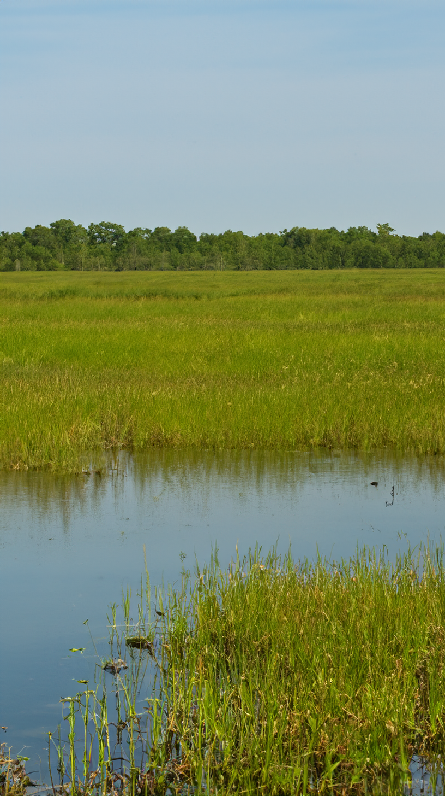
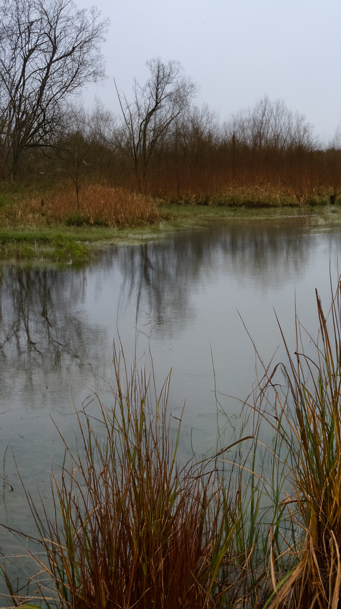
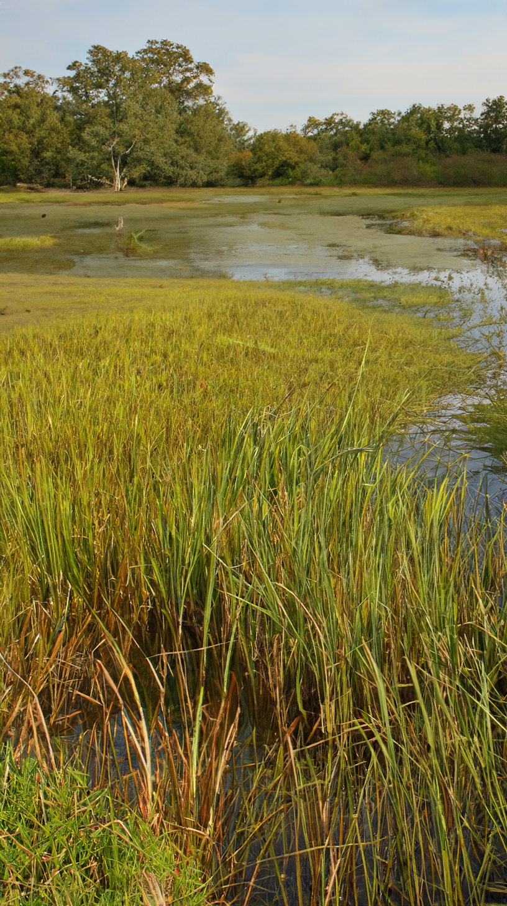
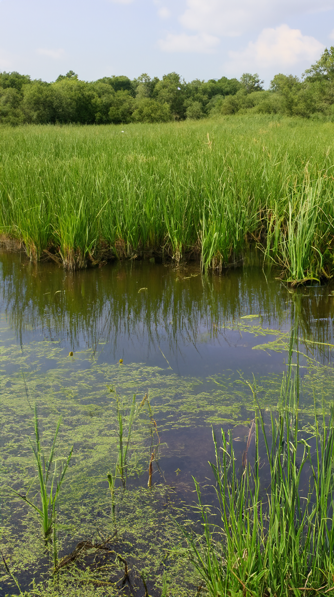
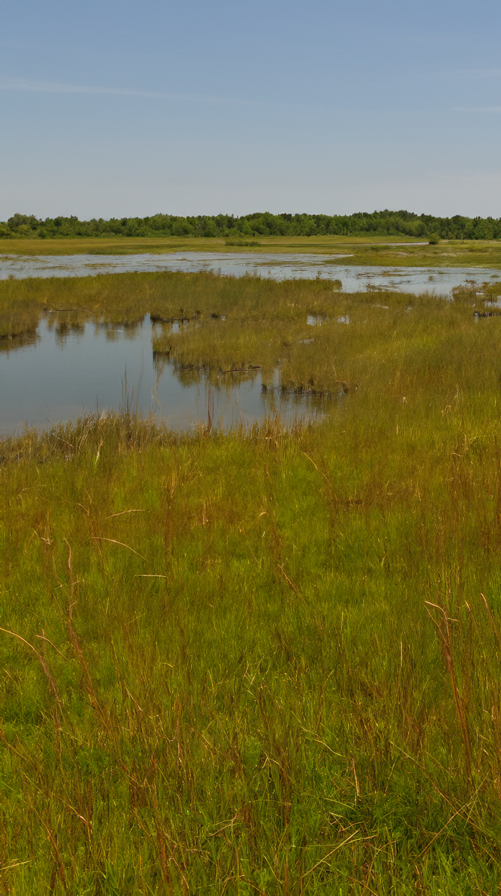
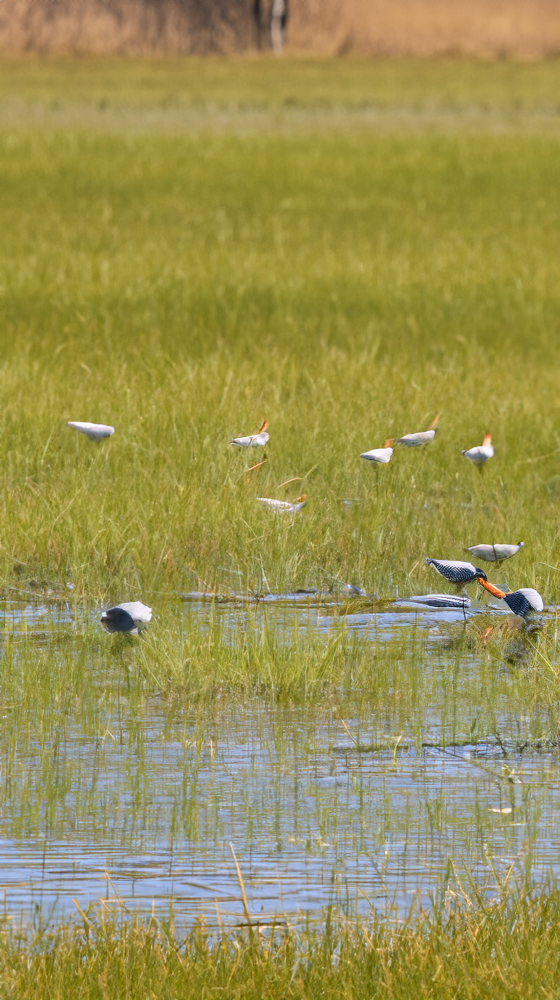
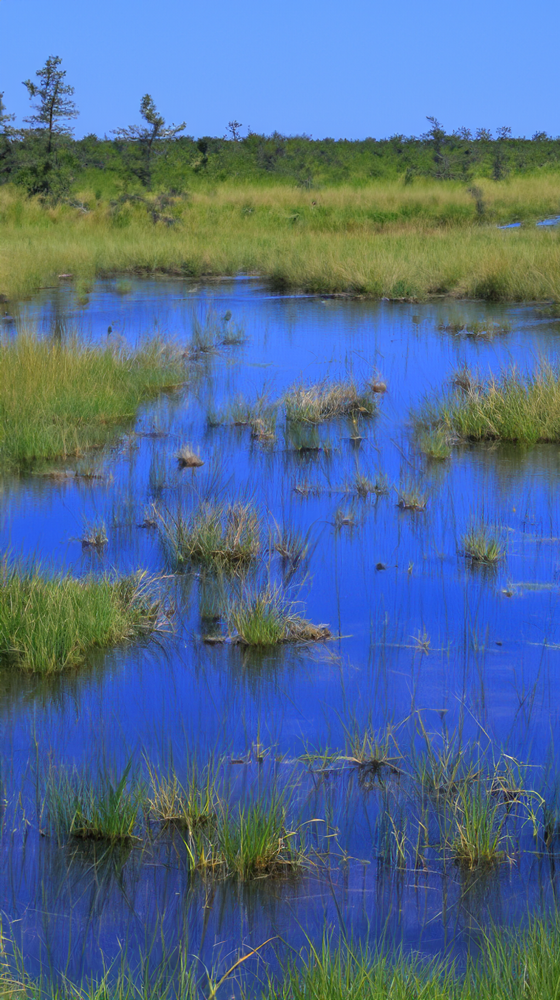
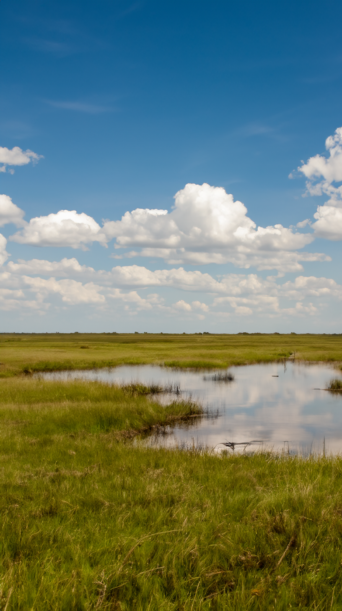

01 / 03
생태와 과학이 만나는 지점에서, 지속가능한미래를 설계합니다. 한국습지학회
vision
- 우리는 자연의 이야기에 귀 기울이며, 해답을 찾아갑니다.
- 습지 보전, 소중한 자연을 지키는 작은 실천에서 시작됩니다.
our value & vision
습지 보호를 통해
자연과 사람이 함께 살아가는 균형을 추구합니다.
-
보전
습지 생태계의 가치를 인식하고
체계적으로 보호합니다. -
연구
과학적 접근을 바탕으로
지속가능한 활용 방안을 모색합니다. -
공존
인간과 자연의 조화로운 공존을 위한
정책과 실천을 제안합니다.
Photo Gallery
당신의 시선으로 만나는 살아있는 습지
-
우포늪
생태계가 잘 보존된 내륙 습지
-
순천만 습지
갈대밭과 철새로 유명한 습지
-
창녕 따오기복원센터
따오기 복원 중심지
-
대암산 용늪
국내 최초 람사르 습지
-
철원 평야 습지
두루미 서식지로 유명
-
고창 운곡습지
자연생태 복원 모범 사례
-
제주 물영아리오름
분화구형 습지의 대표
-
한강 하구 습지
멸종위기종 서식처
Our Projects
한국습지학회의
주요 활동을 소개합니다.
west
east
지속가능한 생태 미래를 위한 습지 보호,
지금 우리가 함께해야 할 실천입니다.
습지는 생물다양성과 수문 순환을 유지하는 지구 생태계의 핵심 자산입니다.
한국습지학회는 과학적 연구와 사회적 인식 제고를 통해 습지의 공익적 가치를 확산해 나가고자 합니다.
한국습지학회는 생태학, 환경공학, 정책연구 등 다양한 분야의 협력을 통해
국내외 습지의 보호와 복원, 지속 가능한 이용 방안을 제시하고 있습니다.
About the Society & Connections
한국습지학회는 습지 보전과 생태 연구를 위한 전문 학술단체로,
학술적 정보 공유와 사회적 인식 확산을 위해 다양한 활동을 이어가고 있습니다.